1. 我的听课本
我的电子听课本用于存放个人听评课记录。系统会在每
学期初自动创建一个听课本，用户也可以自定义创建听课本。
登录工作空间，选择【常规工作→观课议课→我的电子
听课本】，即可进入“我的听课本”（系统默认进入常用听课
本）。
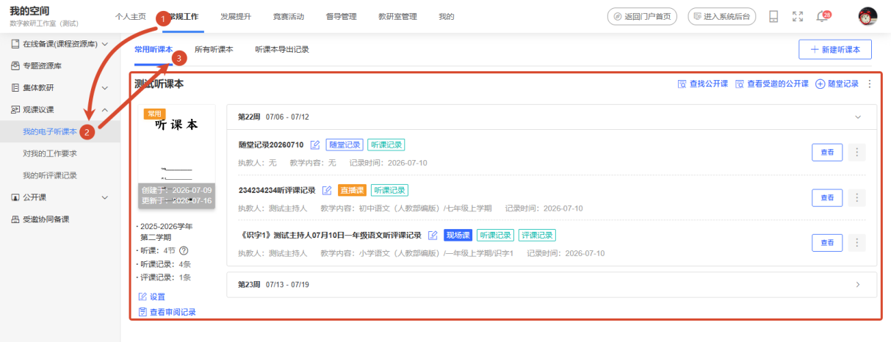
新建的听评课记录会根据时间，自动归类到对应的听课
本中。
2. 新建、修改、删除听课本
登录工作空间，选择【常规工作→观课议课→我的电子
听课本】，即可进入我的听课本模块，点击【所有听课本】栏
目。
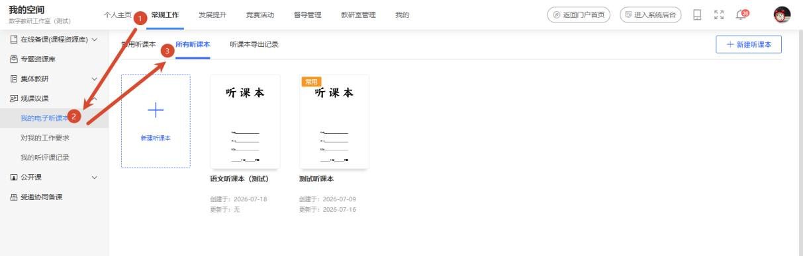
新建听课本
方式一：在“我的听课本”模块，点击页面右上角【新
建听课本】按钮。
方式二：在我的听课本选中【所有听课本】栏目，点击
列表中【新建听课本】卡片。
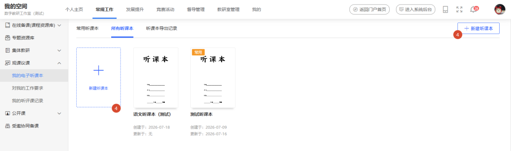
弹出新增听课本的表单窗口，根据新建听课本填写规则
与要求完成填写，点击【保存】按钮，即可完成听课本创建。
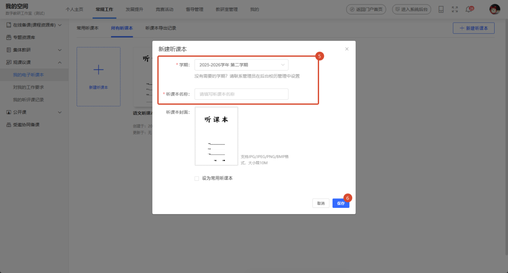
若找不到需要的学期，可联系管理员在后台【校历管理】
中设置。
编辑/删除听课本
鼠标悬停在听课本卡片上，会显示更多功能图标，点击
浮出的【】图标，选择【编辑】或【删除】，即可完成对
听课本编辑或删除操作。
删除的听课本不能恢复，请谨慎操作。
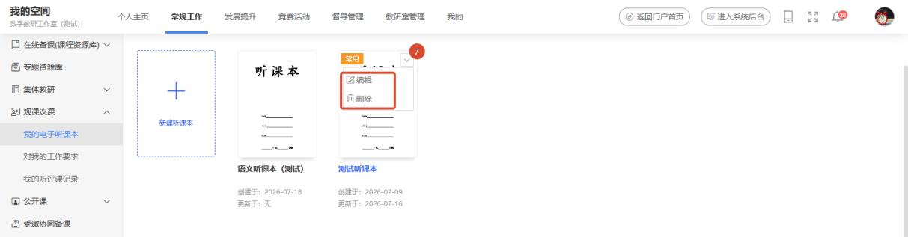
3. 设为常用听课本
选择一个非常用听课本，鼠标悬停在听课本卡片上，会
显示更多功能图标，点击浮出的【】图标，选择【设为常
用听课本】，即可完成将此听课本设为常用听课本。
将听课本设为常用后，后续新建的听评课记录都将被自
动保存到该常用听课本中。
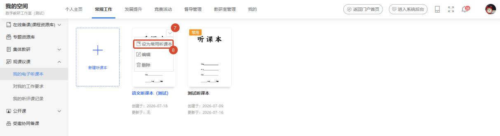
4. 在听课本中迁移听课笔
登录工作空间，选择【常规工作→观课议课→我的电子
听课本】，即可进入我的听课本模块，点击【所有听课本】栏
目，选择一个听课本进入。
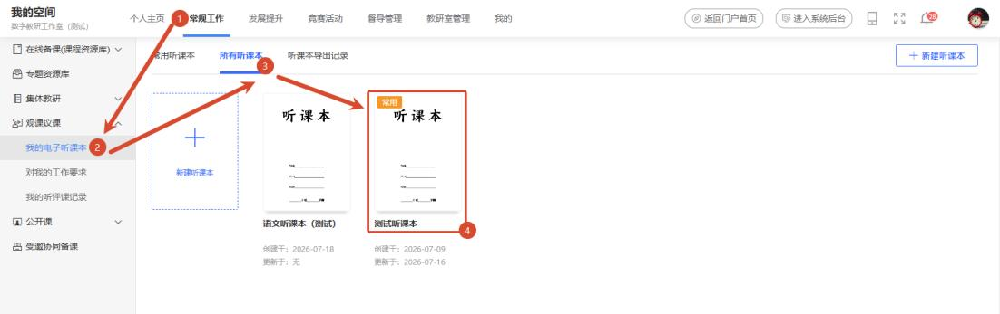
进入听课本详情页，点击听课本右侧【︙】，选择【移到
其它听课本】按钮。
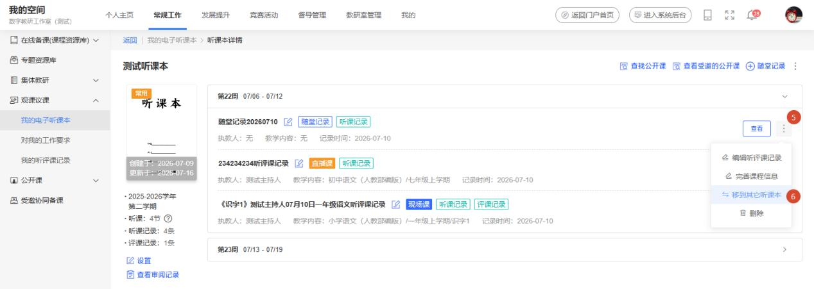
弹出“移动到其它备课本”窗口，选择需要移入的备课
本，点击【确定】即可完成迁移。
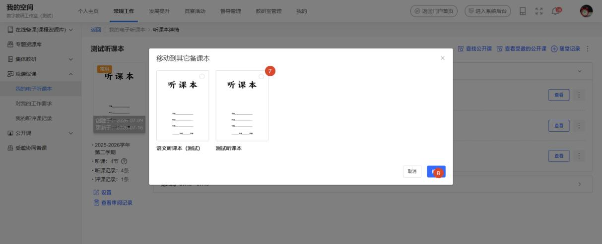
5. 查看听课本审阅记录
登录工作空间，选择【常规工作→观课议课→我的电子
听课本】，即可进入我的听课本模块，点击【所有听课本】栏
目，选择一个听课本进入听课本详情页。
进入听课本详情页，点击【查看审阅记录】， 查看上级
对听课本的留痕检查。
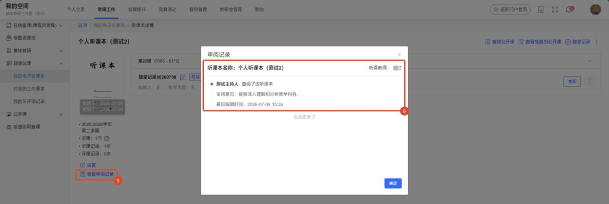
听课本审阅为“督导管理员”业务管理功能，可以对听
课本进行日常临检。
6. 导出与下载听课本
登录工作空间，选择【常规工作→观课议课→我的电子
听课本】，即可进入我的听课本模块，点击【所有听课本】栏
目，选择一个听课本进入听课本详情页。
进入听课本详情页，将鼠标悬停在右侧的【︙】图标上，
在下滑弹出的菜单中点击【导出听课本】按钮，弹出“导出
听课本”窗口。
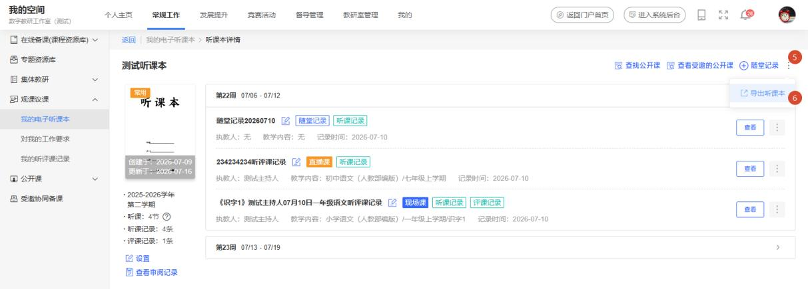
选择需要导出听课的内容与格式，点击【导出】完成听
课本内容导出。
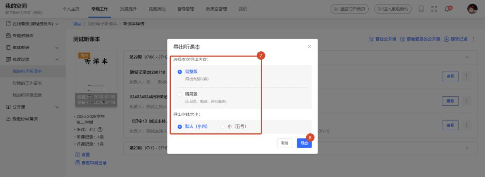
返回至【我的电子听课本】列表，选择【听课本导出记
录】，导出成功的听课本后将显示【下载】链接。点击【下载】
即可将导出的Word 文档下载到电脑中。
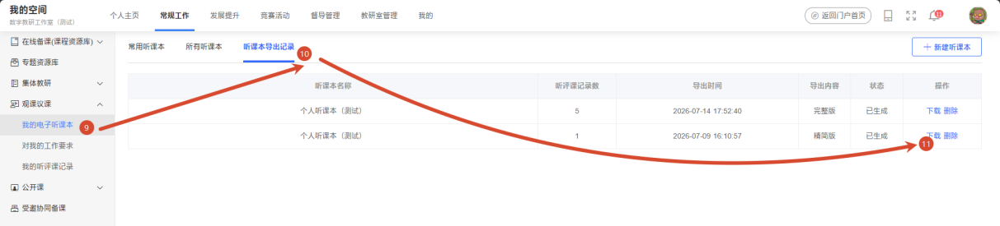